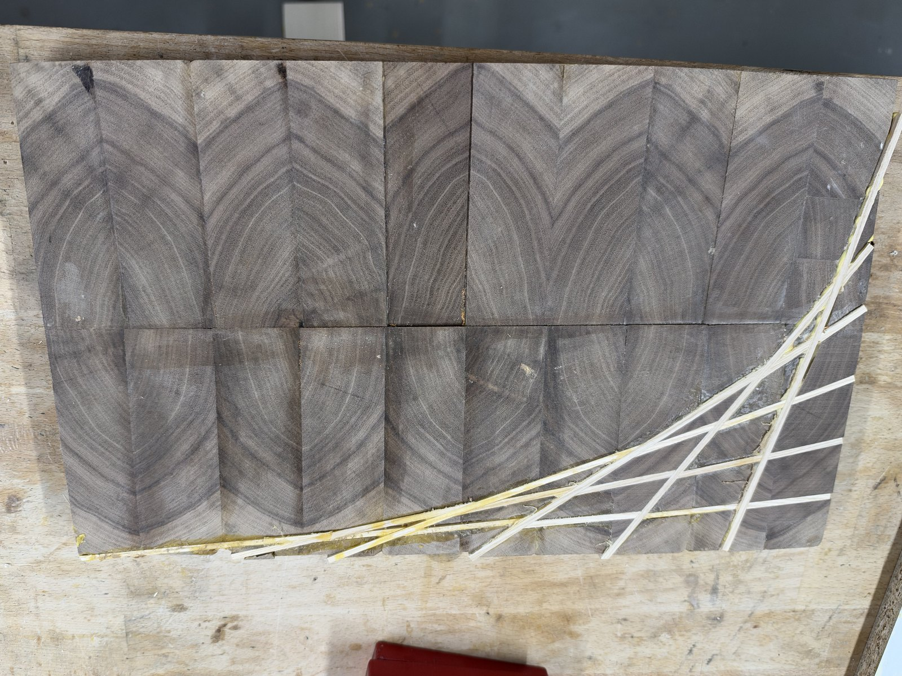

Progetto 07 • Intreccio Tangenziale Parabolico / Ceppo in Legno di Testa
Tagliere Geometrico in Legno di Testa Noce & Frassino
Un tagliere in legno di testa di 27 cm × 37 cm × 27 mm che unisce 20 blocchi di noce europeo (Juglans regia) accoppiati a libro aperto con sei raggi d'intarsio intersecanti in frassino europeo (Fraxinus excelsior). Scolpito tramite tagli passanti sequenziali guidati per intessere un inviluppo parabolico matematico sulle venature ad arco.
Specifiche del Progetto & Parametri di Bottega
Dimensioni finali
27,0 cm larghezza × 37,0 cm lunghezza × 27 mm (2,7 cm) spessore
Architettura della fibra
Vera matrice in legno di testa — Fibre verticali di noce abbinate a listelli tangenziali intersecanti in frassino di filo
Mosaico & Accoppiamento
20 tasselli di noce a libro aperto disposti su 2 colonne × 10 file con anelli di crescita ad arco gotico
Geometria del motivo
Inviluppo tangenziale parabolico a 6 raggi — Rette tra punti equidistanti sui bordi che generano una curva di Bézier quadratica
Titebond III Ultimate (resina alifatica impermeabile ANSI/HPVA Tipo I, idonea al contatto alimentare indiretto)
Attrezzatura di taglio & serraggio
Sega ad affondamento cordless Makita 36V (2×18V) su staggia dritta morsettata, morsetti paralleli Bessey K-Body REVO e strettoi a F
Protocollo d'intarsio
Sostituzione iterativa della lama — tagliare, incollare, polimerizzare e rifilare ciascun raggio di frassino prima del vettore successivo
Ciclo di levigatura
Squadratura perimetrale e levigatura rotorbitale: grana 80 → 120 → 180 → 240 (bagnatura con acqua distillata) → 320
Finitura protettiva
Saturazione capillare con olio minerale USP & balsamo svizzero alla cera d'api bio Holz-Butter
Origine
Zurigo, Svizzera
Trasformazione Interattiva della Superficie
Incollaggio Grezzo a 6 Raggi vs. Geometria Squadrata & Levigata
Trascina il cursore centrale per confrontare il pannello grezzo appena tolto dai morsetti — con i listelli di frassino sporgenti e i residui di colla — con il tagliere squadrato, spianato e levigato a grana 320.
Cronaca fotografica in 17 scatti centrati e video HD: dall'accoppiamento a libro aperto degli anelli annuali all'intreccio sequenziale dei sei raggi parabolici in frassino.
Fase 01Coreografia della Venatura
Accoppiamento a Libro Aperto di 20 Blocchi di Noce ad Archi Cattedrale
Ogni tagliere geometrico di carattere nasce molto prima del primo taglio d'intarsio, con una rigorosa selezione della fibra. Venti spessi blocchi in legno di testa di noce europeo stagionato (Juglans regia) sono stati troncati in sequenza e disposti sul banco in due colonne da dieci file.
Ribaltando i blocchi adiacenti in coppie speculari, gli anelli di accrescimento si incontrano lungo la giunzione formando archi gotici simmetrici e medaglioni a diamante, bilanciando al contempo i movimenti igrometrici lungo i 27 cm di larghezza.
Coreografia simmetrica degli anelli di crescita su tutti i 20 blocchi prima dell'incollaggio.Clicca per ingrandire
Nota di bottega: Simmetria estetica e stabilità meccanica
Quando sezioni consecutive dello stesso tavolone di noce vengono aperte come le pagine di un libro, gli anelli primaverili e tardivi coincidono al decimo di millimetro lungo il giunto, trasformando il disegno naturale dell'albero in architettura simmetrica e annullando le tensioni d'imbarcamento.
Fase 02Allestimento & Prova a Secco
Impostazione a Doppia Colonna & Calibrazione dei Morsetti Paralleli
Invece di tentare un incollaggio simultaneo di tutti i 20 tasselli, la matrice è stata suddivisa in due colonne lineari da 10 blocchi ciascuna, allineate contro una staggia piallata sopra la barra di un morsetto parallelo Bessey K-Body REVO.
Una prova di serraggio a secco ha confermato la chiusura ermetica di tutte le facce di contatto senza alcuna fessura prima di aprire il flacone di colla.
Le ganasce parallele assicurano un perfetto allineamento assiale lungo i 37 cm.Clicca per ingrandire
Controllo preliminare a secco prima della stesura dell'adesivo.Clicca per ingrandire
Fase 03Prima Laminazione
Bagnatura dei Pori di Testa & Incollaggio delle Colonne
Abbondanti cordoli di resina alifatica impermeabile Titebond III Ultimate sono stati stesi sulle facce di accoppiamento dei tasselli di noce adagiati direttamente sull'asta del morsetto.
Con un pennello flessibile in silicone la colla è stata tirata in un velo continuo e uniforme su ogni faccia per saturare i vasi capillari di testa ed evitare giunti magri.
Incollaggio metodico direttamente sulla barra dello strettoio parallelo.Clicca per ingrandire
Fase 04Assemblaggio del Pannello Maestro
Unione delle Due Colonne da 10 Blocchi Lungo il Giunto Centrale
Dopo 24 ore di polimerizzazione, i bordi interni delle due stecche da 10 blocchi sono stati piallati a filo e a squadra per ottenere una linea di giunzione longitudinale invisibile al centro del tagliere.
Appoggiate su un pannello antiaderente in nobilitato bianco, le due metà hanno ricevuto un cordolo continuo di Titebond III prima di essere serrate in un unico massello monolitico.
Cordolo centrale pronto per la pennellatura e la morsettatura trasversale.Clicca per ingrandire
Fase 05Tracciatura Matematica
Disegno dell'Inviluppo Tangenziale Parabolico a 6 Raggi
Con il pannello di noce bloccato in piano da robusti strettoi a F, il tracciato geometrico degli intarsi è stato disegnato con pennarello verde direttamente sulla superficie grezza in legno di testa.
Sei punti equidistanti lungo il bordo inferiore sono stati collegati in sequenza a sei punti equidistanti lungo il bordo destro (1 con 1, 2 con 2, fino a 6 con 6). L'inviluppo interno di queste sei rette genera una fluida parabola di Bézier quadratica.
Divisioni equidistanti collegate da segmenti rettilinei generano un elegante arco parabolico.Clicca per ingrandire
Teoria geometrica: Tagli rettilinei, illusione curva
Nella geometria proiettiva, congiungere passi costanti su due assi incidenti disegna l'inviluppo tangenziale di una parabola. Sebbene ogni taglio di lama e ogni listello di frassino siano perfettamente dritti, l'occhio percepisce una curva armoniosa che incornicia le venature del noce.
Fase 06Raggio d'Intarsio 01
Primo Taglio Passante & Laminazione del Primo Listello di Frassino
La sequenza d'intarsio prende il via dal raggio esterno più inclinato. Dopo aver sezionato nettamente il massello di noce lungo la prima linea, un listello calibrato di chiaro frassino europeo (Fraxinus excelsior) è stato incollato all'interno del taglio.
A polimerizzazione avvenuta, le code sporgenti vengono rifilate a filo così da restituire un pannello monolitico pronto per il taglio intersecante successivo.
Raggio 01 completato: netto contrasto cromatico lungo il fianco destro.Clicca per ingrandire
Fase 07Taglio Guidato ad Affondamento
Allineamento della Staggia Guida & Tagli con Makita 36V Plunge Saw
Eseguire tagli diagonali acuti attraverso 27 mm di legno di testa richiede una guida rigidissima per impedire qualsiasi flessione della lama. Per ogni raggio successivo, una staggia dritta in legno duro piallato è stata morsettata al banco esattamente sull'angolo tracciato.
Scorrendo contro questa battuta fissa con aspirazione collegata, la sega ad affondamento brushless Makita 36V (2×18V) ha attraversato con estrema pulizia sia il denso noce di testa sia i listelli di frassino già inseriti.
La battuta morsettata elimina ogni deviazione laterale lungo la diagonale.Clicca per ingrandire
Taglio netto al carburo privo di scheggiature attraverso noce e intarsi precedenti.Clicca per ingrandire
Fase 08Compensazione Lama & Serraggio
Listelli di Frassino Calibrati al Taglio Lama & Morsettatura Anti-Scorrimento
Quando la lama seziona obliquamente un listello già incollato, l'asportazione dello spessore del taglio (~2,2 mm) disallineerebbe lateralmente i due monconi del listello precedente — a meno che il nuovo listello di frassino non abbia esattamente lo stesso spessore della traccia asportata!
Piallando ogni listello di frassino allo spessore esatto della lama, tutti i raggi precedenti proseguono perfettamente collineari attraverso ogni incrocio. In fase di pressatura, un fermo inferiore in legno e uno strettoio Bessey diagonale impediscono lo scivolamento idraulico sul velo di colla.
Calibrare il frassino sullo spessore della lama mantiene perfettamente dritti tutti i raggi incrociati.Clicca per ingrandire
Geometria di serraggio incrociata che assicura compressione e registro longitudinale.Clicca per ingrandire
La regola d'oro degli intarsi intersecanti: Uguagliare il taglio lama
Se il listello inserito è più spesso o più sottile della lama, ogni linea precedente subirà uno scalino laterale nel punto d'incrocio. Pareggiare al decimo di millimetro spessore del listello e larghezza di taglio mantiene ogni raggio visivamente ininterrotto.
Fase 09Intreccio dei Raggi 04–06
Cicli Iterativi di Taglio e Polimerizzazione della Matrice Parabolica
Poiché ciascun nuovo taglio attraversa tutti gli intarsi precedenti, non è mai possibile incollare due raggi incidenti contemporaneamente: ogni singolo raggio richiede il proprio ciclo completo di taglio, stesura bilaterale della colla, morsettatura e maturazione.
Con i raggi 04, 05 e 06, il cuneo triangolare separato si trasforma in un raffinato mosaico di noce di testa e sezioni di frassino. Disposti in verticale sul melaminico, entrambi i lembi ricevono una pennellatura uniforme di Titebond III prima di serrare il sesto e ultimo raggio.
La doppia stesura a pennello scongiura zone asciutte nelle fibre porose di testa.Clicca per ingrandire
Cinque vettori convergenti senza alcuno scarto agli incroci.Clicca per ingrandire
Incroci multipli nitidi nel quadrante inferiore destro.Clicca per ingrandire
Il sesto serraggio completa l'intreccio tangenziale matematico.Clicca per ingrandire
Fase 10Spianatura, Levigatura & Rivelazione
Squadratura Perimetrale, Finitura a Grana 320 & Presentazione Finale
Liberato dall'ultimo ciclo di morsetti, il pannello grezzo mostra tutti i sei raggi intersecanti di frassino europeo saldamente incastonati nel noce scuro. Rifilate le eccedenze e rimossi i cordoli di colla indurita, i quattro lati sono stati squadrati alle misure definitive di 27 cm × 37 cm × 27 mm.
Dopo la spianatura e la levigatura progressiva da grana 80 a 240, la superficie è stata inumidita con acqua distillata per sollevare il pelo del legno di testa e levigata fino a grana 320, prima del trattamento finale con olio minerale alimentare USP e cera d'api svizzera Holz-Butter.

Il pannello monolitico grezzo appena uscito dal sesto ciclo di pressatura.Clicca per ingrandire
Geometria compiuta: gli archi cattedrale del noce dialogano con la parabola luminosa del frassino europeo.Clicca per ingrandire
Video di bottega: Panoramica ravvicinata sugli anelli a libro aperto del noce di testa e sugli incroci millimetrici in frassino.Video HD (12 sec)
Scienza del Legno & Geometria
Contrasto Materico & Armonia Strutturale
Accostare il velluto scuro del noce di testa alla luminosità elastica del frassino europeo richiede durezze bilanciate e assoluta precisione di taglio.
Noce Svizzero / Europeo
Juglans regia
Amato per il durame bruno cioccolato e gli espressivi anelli di crescita. Orientato di testa, accoglie dolcemente il filo dei coltelli da chef richiudendosi naturalmente dopo ogni taglio.
Durezza Janka
1.010 lbf
Ruolo
Campo di 20 Blocchi
Frassino Europeo
Fraxinus excelsior
Legno duro europeo tenace ed elastico a poro ad anello, storicamente scelto per manici d'utensili e curvatura a vapore. La sua tinta biondo crema traccia linee grafiche nitide nel noce.
Durezza Janka
1.320 lbf
Ruolo
6 Raggi Tangenziali
Inviluppo Parabolico
Geometria Proiettiva
Sei tagli rettilinei tra intervalli costanti lungo due bordi ortogonali generano una curva di Bézier quadratica — dimostrando come la pura precisione lineare possa scolpire forme curve.
Intarsi
6 Vettori Rettilinei
Incroci
15 Nodi Nitidi
Indice Visivo
Galleria Completa di Costruzione (17 Foto)
Clicca su qualsiasi immagine centrata ad alta risoluzione per esaminare gli anelli di testa, i tagli guidati e gli incroci in frassino.